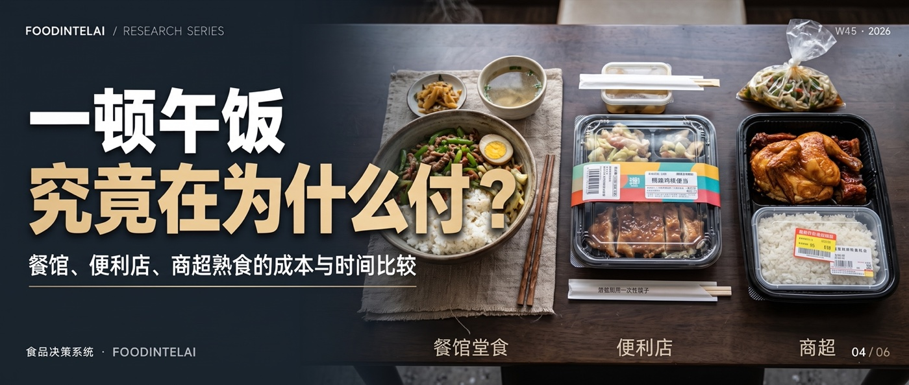

餐厅人均50.5元，超市食堂19.9元，便利店粉面7元起：比的是同一顿饭吗消费任务与跨业态替代研究 · 第4篇 一顿午饭的选择 ｜ QTOS-DEMAND-001-DFoodIntelAI 研究组 · 沧林 ｜ 2026年11月5日 ｜ W45专题 4/6三个公开价格差了七倍：餐厅人均50.5元，超市食堂19.9元，便利店粉面7元起。但它们比的不是同一顿饭。第四篇不下替代结论，只交付三样东西：能采数的记录表，样本量怎么定，以及现在哪些观察可以说、哪些不能。
图｜FoodIntelAI W45 系列（共 6 篇），本篇为第 4 篇。把2026年能查到的三个公开价格放在一起：小菜园上半年堂食人均消费50.5元；北京一家超市食堂的炒菜类自助，每份19.9元；美宜佳在筹划的餐饮型便利店，粉面7元起。三个数差了七倍。很容易得出一个结论：吃一顿午饭，便利店比超市便宜，超市比餐馆便宜，所以消费者会往便宜的地方走。文献这个结论不成立，不是因为数字错了，而是因为三个数比的不是同一顿饭。50.5元是一家正餐连锁午晚餐混合的人均，往往几个人分着吃；19.9元是按类别计价的自助，份量由顾客自己决定；7元是起价，不是均价，而且是一个仍在测试的新店型。价格能查到，份量、时间和场景查不到。比较“一顿午饭”之前，先得把“一顿午饭”定义清楚。本篇是W45专题的第四篇。按提纲的纪律，缺少可比样本时，只发表调查方法和已有的观察，不宣称替代已经发生。所以这一篇交付的是三样东西：能采数的记录表，样本量怎么定，以及到目前为止，哪些观察是真的、哪些还不能说。19.9元北京超市食堂炒菜类自助价（2024年10月报道）7元起美宜佳餐饮型便利店粉面起价（2026年6月，测试中）数据：小菜园中期业绩；人民日报2024年10月9日；红餐网2026年6月3日。三个价格口径不同，不可直接比较。口径各异：人均为多人分食的均值，自助价按类别计价，起价为最低价。餐厅堂食人均50.5元上市公司披露，2026年上半年午晚餐混合，多人分食超市食堂自助13元／19.9元媒体报道，2024年10月按类别计价，份量自选；价格可能已变便利店粉面7元起媒体报道，2026年6月起价；店型仍在测试超市食堂的数据还有一个旁证：零售商业评论2024年8月的报道，物美大食堂中关村门店每日客流约1000人，单日营业额超过2万元，折算人均约20元，与自助定价吻合。这是2024年的情况，现价可能不同，只作参照。文献笔者测算第1篇给出了综合成本的算法：餐食价，加上总耗时乘以时间的机会成本。这个算法只是起点。要比较的是“同一顿饭”，至少还要控制三件事：份量与构成（主食、荤菜、素菜各多少）；取得这顿饭花的时间，行走、等待、取餐、用餐要分开记；还有环境，有没有座位，是不是热的，能不能和同事一起吃。这三件事里，份量最容易被忽略。同样是19.9元，一份是三个菜加米饭，另一份是半盒饭，单位价格差一倍。所以记录表里必须有“份量”这一栏，用称重或者标准照片来记，而不是凭印象。研究假设时间的机会成本，也不能凭感觉定。取值要有出处，比如当地的平均小时工资，并像第1篇那样做三档敏感性：15元、25元、40元各算一遍，看结论会不会跟着变。结论随机会成本翻转的，就只能说“取决于顾客怎么看时间”。研究假设份量与构成称重或标准照片，注明主食、荤、素控制品质最后一个字段“当日备选”，是整张表里最有价值的一个。价格和时间都是结果，只有“当时还考虑过哪里”，才有可能说明消费者在做取舍。每次记录多花十秒，但没有它，就只有消费记录，没有选择记录。研究假设样本设计有四条要求：同一个城市，同一个商圈，最好是步行十分钟内能同时找到三类业态；同一个时段，比如工作日的11点半到13点半；记录的是实际购买行为，不是问卷里的回忆；同一批人要记录多天，才能看出他们在不同日子的选择有没有切换。研究假设样本量决定了你能分辨多小的差异。假设某个业态午餐总成本的标准差约为8元，那么样本量与95%置信区间的半宽大约如表3。示意表3 样本量与均值估计误差（示意，假设标准差8元）这张表说明了一件事：如果两个业态的综合成本只差3元，30条记录的误差区间已经接近3元，分不出来；要分辨出这个差距，至少需要几百条。所以小样本只能报“范围”和“线索”，不能报“某业态更便宜”。分析也分三步。第一步只描述：每个业态的价格、时间、份量的分布，不下比较结论。第二步比较综合成本，但只报区间和中位数，不报一个点。第三步才看同一个人的切换：同一个消费者在不同日子的选择，如果在餐馆和便利店之间来回，才有资格讨论这两者在这个任务上是否可以互换。研究假设要防几种常见的偏差：愿意参与记录的人，往往本来就更在意花销，不代表所有人；只记录一周，可能碰上天气或促销；事后回忆的“当时还考虑过哪里”，会被最终的选择美化。所以每条记录都要当场写，不能事后补，并且要把天气、是否有优惠一并记下来。还有一点要提前说清楚：小票、支付记录和照片都属于个人信息。收集时要明确告知用途，只保留必要字段，不记录姓名和手机号，照片里的人脸要遮掉。可以确认的是供给侧的动作。永辉超市调改门店突破300家后，春节期间熟食、烘焙重点分类同比增长均超220%，但这是调改店的低基数，不能当作行业水平；永辉在福州的一家门店上线了餐饮外卖“永辉厨房”，月销量超过300单，规模还很小。美宜佳规划的餐饮型门店，鲜食占比超过40%，近百个鲜食SKU，仍在测试。文献这些观察证明了一件事：超市和便利店都在进入午餐这个任务，而且是认真地进入。但它们没有回答最关键的问题，同一个消费者，周一在餐馆吃，周三在便利店吃，周五在超市吃，是不是同一个任务下的切换。这类数据，目前没有任何公开来源。不必等大样本。如果你的门店周边有三类业态，可以自己做一次现场观察：选一个工作日的午市，用三十分钟，记录周边三家不同业态的价格、排队时间和出餐速度，再随机问十位顾客一个问题：“今天还考虑过去哪里吃？”十个回答不能得出结论，但足以让你知道，你的竞争对手名单里有没有另一个业态。研究假设看到“某业态更便宜”的结论时，先问三件事：比的是不是同一份量，计时是不是包含了行走和等待，样本是不是同一个商圈同一个时段。三件事答不上来，这个结论只能当线索。对不同业态的经营者，关注点也不同，以下是初始判断，需要用记录去验证：餐厅要盯的是出餐速度和份量，快餐化是不是已经把等待压到顾客的容忍线以内；便利店要盯热食和座位，没有座位的午餐，能争到多少赶时间的客人；超市要盯结账排队，价格再低，排十分钟队的午饭，对赶时间的人也不是一个选项。研究假设一个价格说明不了一顿饭。能说明的，是同一个人，在同一类场景里，当时怎么选。下一篇处理另一个问题：同样一顿饭，为什么有人愿意多花十块钱。我们会把价格以外的选择因素列成一张变量字典，包括时间成本、份量、口味稳定性、即时性、环境和家庭人数，并明确哪些变量必须靠消费者调查才能验证。第1篇邀请读者记录午餐，本篇的表2可以直接拿去用，欢迎你自己记一周。完整研究 · foodintelai.com 知识库三业态午餐记录表与调查设计，随专题推进陆续沉淀到青藤OS。[1] 小菜园（HK0999）2026年中期业绩（2026年8月14日），经北京商报与职业餐饮网报道相互核对：堂食人均消费由57.1元降至50.5元。[2] 人民日报2024年10月9日第19版《超市开食堂，方便又实惠》：北京中关村一家超市食堂，主食类自助13元、炒菜类自助19.9元，高峰时段可容纳100多人同时就餐。零售商业评论（36氪，2024年8月13日）：物美大食堂中关村门店每日客流约1000人，单日营业额超过2万元；通州龙湖店开业首日客流接近500人；超市食堂人均消费在20元左右。均为2024年数据，现价可能已变化。[3] 红餐网2026年6月3日报道：美宜佳筹划餐饮型门店，鲜食占比规划超过40%，近百个鲜食SKU，粉面7元起，新店型仍处于测试优化阶段，尚未定型。[4] 北京商报2026年2月26日报道：永辉超市全国调改门店突破300家，春节期间（腊月二十八至正月初七）熟食、烘焙重点分类同比增长均超220%，永辉称中央厨房为其提供场景支撑；财联社2026年6月22日报道：永辉福州奥体中心店上线餐饮外卖“永辉厨房”，美团外卖页面显示月销量超300单。证据等级：“文献”为上市公司披露或主流媒体报道；“笔者测算”为基于上述数据的推算；“研究假设”为本专题的方法设计，尚未经过样本验证；“示意”为演示用的假设值。
口径说明：(1) 图1与表1中的三个价格口径不同，不可直接比较，本篇的目的恰恰是说明这一点。(2) 超市食堂价格为2024年数据，永辉调改店的增长为低基数下的春节数据，均不代表行业水平。(3) 本篇没有采集到三业态的同一餐次实测样本，不宣称任何业态之间的替代已经发生。(4) 表3的标准差为假设值，实际应由预调查得出。
数据截止：2026年10月24日。声明：本文为行业研究，数据来自公开资料，不构成投资、经营或法律建议。本文在AI辅助下完成起草，经作者审核。